|
 |
 |
Puntos de
Inflexión Ecológica
- Cómo funcionan?
- Transformando círculos viciosos a círculos virtuosos
- Ingredientes para el éxito
- Elaboren sus propios Puntos de Inflexión Ecológica
Historias por Región
Historias por Tema
- Agricultura
- Agua y Cuencas
- Bosques
- Ecosistemas Urbanos
- Educación
- Energía
- Negocios
- Pesquerías
- Salud Pública
Videos Cortos
- Salvando un arrecife coral y una pesquería
(Filipinas) - Revitalizando vecindades urbanas con jardines comunitarios
(Nueva York) - Revirtiendo la deforestación tropical con bosques comunitarios
(Thailandia) - Rellenando aguas subterráneas con captación pluvial
(Rajastán, India) - Escapando la trampa de pesticidas
(India)
Explicando el Éxito
- Salvando un arrecife coral y una pesquería
(Filipinas) - Revitalizando vecindades urbanas con jardines comunitarios
(Nueva York) - Revirtiendo la deforestación tropical con bosques comunitarios
(Thailandia) - Rellenando aguas subterráneas con captación pluvial
(Rajastán, India) - Escapando la trampa de pesticidas
(India)

Ecología Humana: Presenta los principios de la ecología humana que sirven de fundamento a los Puntos de Inflexión Ecológica
India - Andhra Pradesh - El Manejo de Plagas sin Pesticidas para plagas agrícolas: Escapando la Trampa de Pesticidas
- Breve: Al controlar las plagas sin pesticidas químicos los agricultores salen del envenenamiento y endeudamiento crónicos y retoman el camino de la salud y la esperanza.
- Lea la historia detallada
- Fotos tomadas por Amanda Suutari - Todas las fotos están disponibles para descargarse gratis; favor de atribuir a la fotógrafa y al sitio de Internet.
- Pulse sobre la foto para ver los detalles.

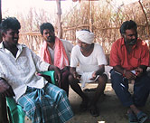
Meeting at Margam´s

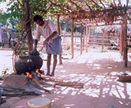
Botanical pesticide lab

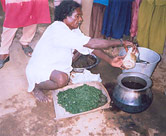
Processing neem leaves

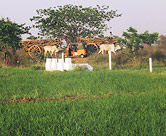
Mixed transport styles

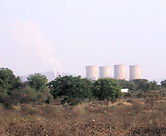
Nearby cement factories

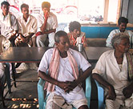
Tea shop discussion

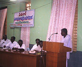
Conference of educators

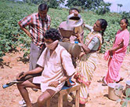
Using Chili-garlic solution

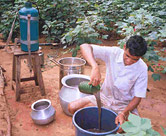
Neem seed solution

Neem seed grinders

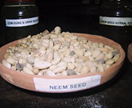
Neem seeds

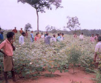
Spreading NPM message

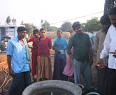
Using old pesticide can

Old pesticide can use

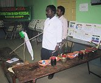
NPM conference display

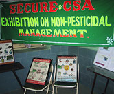
NPM poster display

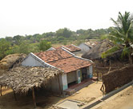
Punakula village

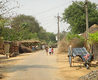
Main street, Punakula village

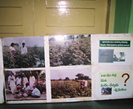
NPM poster

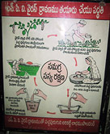
NPM poster

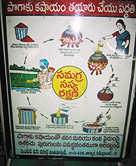
Virus solution

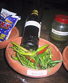
Chilis and kerosene

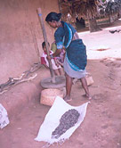
Crushing Neem

Explaining benefits of NPM

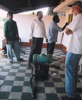
Chemical pesticide sprayer

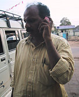
Venu Madhav at work